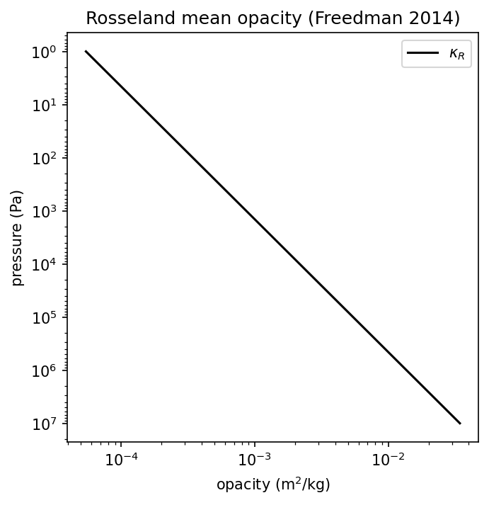
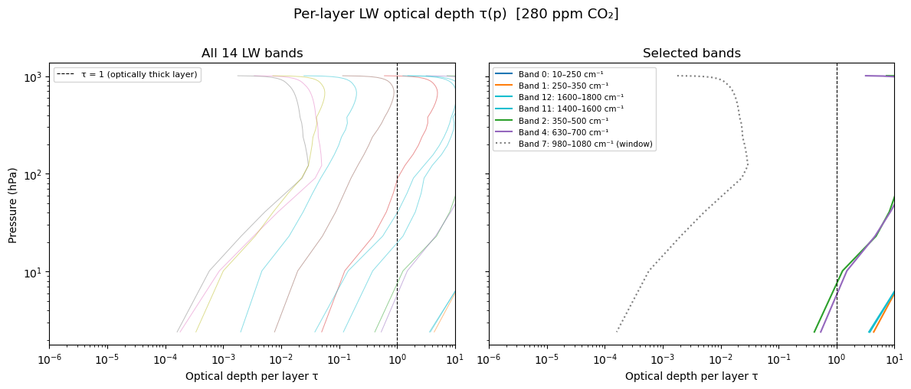
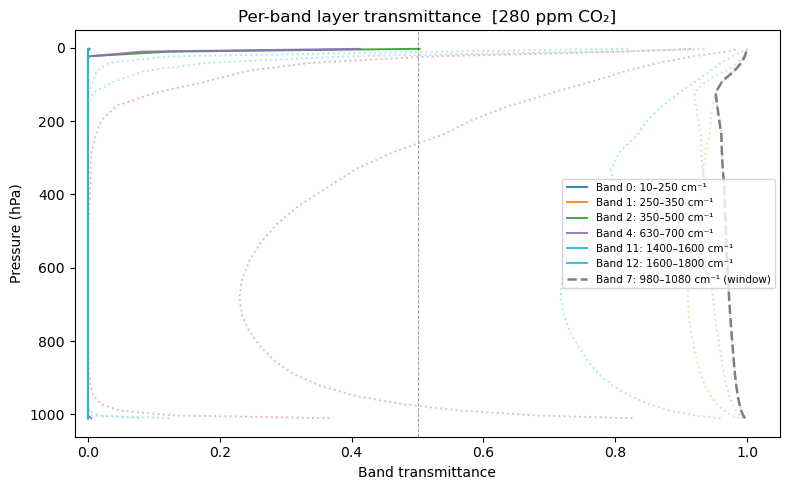
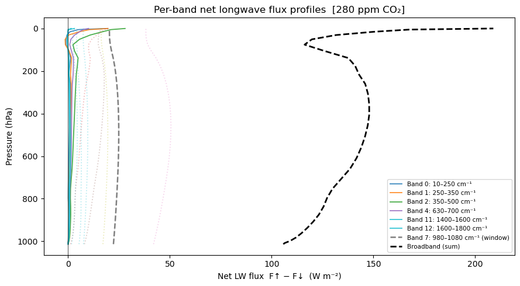
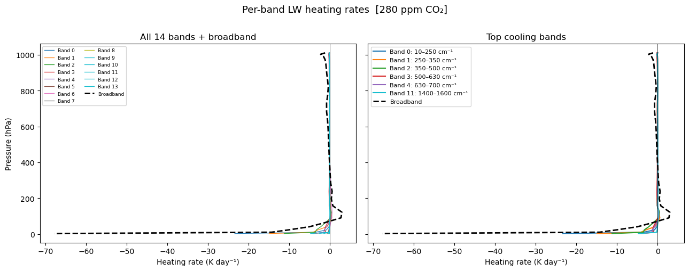
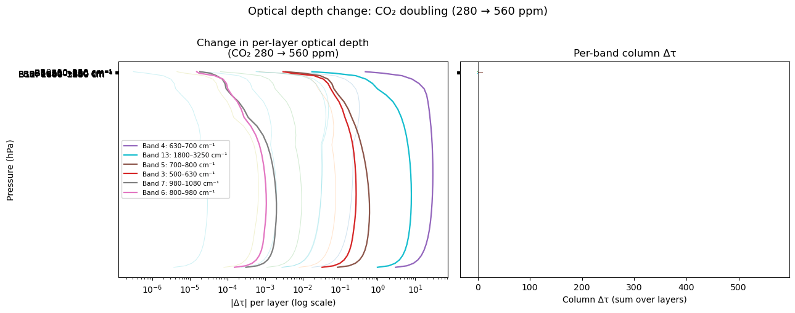
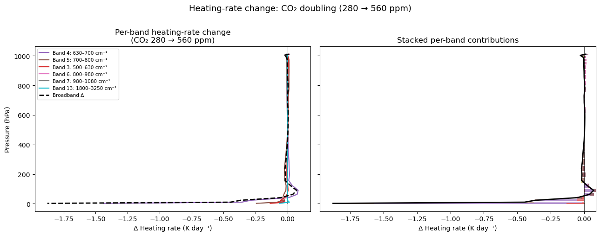
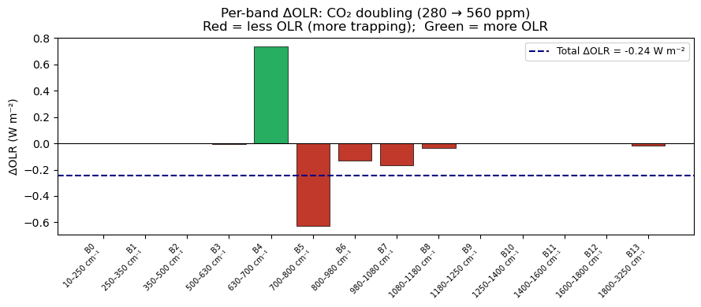

Everything so far has been a generic correlated-k story. The picket-fence model is the simplest possible parameterisation of that story that still captures non-grey physics. It fits in half a page of algebra and runs at > 1 000 iter/s in pure Python.
The Parmentier & Guillot (2014) formulation
The atmosphere has two opacities in the thermal (LW) and three in the visible (SW), all expressed as ratios of the Rosseland mean opacity \(\kappa_R\):
The Planck function in the LW is split: fraction \(\beta\) goes to the opaque band 1, \((1-\beta)\) to the transparent band 2. In the window (\(\gamma_2 \ll
1\)) most of the cooling-to-space happens; in the absorption band (\(\gamma_1
\sim 1\)) the thermal blanketing is concentrated.
This two-opacity caricature is the “picket fence”: a spectrum that alternates tall opaque slats (CO₂/H₂O line clusters) and short transparent slats (the atmospheric window).
The Rosseland mean opacity
\(\kappa_R\) is the reciprocal of a Planck-weighted harmonic mean of \(\sigma(\nu)\). climt uses the Freedman et al. (2014) polynomial fit for solar-composition gas-giant atmospheres:
def compute_rosseland_mean_opacity(T, p, coeffs):
"""Compute the Freedman et al. (2014) Rosseland mean opacity.
Args:
T: temperature, K (scalar)
p: pressure, Pa (scalar)
coeffs: coefficient dict from load_freedman2014_coefficients()
Returns:
kappa_R: Rosseland mean opacity, m^2/kg (scalar)
"""
log_T = np.log10(max(float(T), 10.0))
log_P = np.log10(max(float(p) * 10.0, 1.0)) # Pa → dyne/cm^2
if T < float(coeffs["T_boundary"]):
log_k = float(coeffs["a_lo"]) * log_T + float(coeffs["b_lo"]) * log_P + float(coeffs["c_lo"])
else:
log_k = float(coeffs["a_hi"]) * log_T + float(coeffs["b_hi"]) * log_P + float(coeffs["c_hi"])
return 10.0**log_k * 0.1 # cm^2/g → m^2/kg

Figure 1: Figure 6.1 — Rosseland mean opacity as a function of pressure for a hot-Jupiter column. The shape drives the radiative-equilibrium T-p profile.
The ratio coefficients \(\gamma_i\) and \(\beta\)
The ratios \(\gamma_{v1}, \gamma_{v2}, \gamma_{v3}, \beta\) and \(\gamma_P\) are piecewise-linear functions of effective temperature \(T_\text{eff}\), fitted in Parmentier et al. (2016) Table 1. climt ships those coefficients and interpolates them at runtime:
def lookup_ratio_coefficients(coeffs, T_eff):
"""Look up Parmentier ratio coefficients for a given T_eff.
Args:
coeffs: loaded coefficient data (from load_parmentier_coefficients)
T_eff: effective temperature, K (scalar)
Returns:
gamma_v1, gamma_v2, gamma_v3, beta, gamma_P, R
"""
X = np.log10(max(T_eff, 10.0)) # avoid log10(0)
boundaries = coeffs["T_eff_boundaries"]
# Find region index
region = 0
for i in range(len(boundaries) - 1):
if T_eff >= boundaries[i] and T_eff < boundaries[i + 1]:
region = i
break
def _eval_linear(ab_array, region_idx, X_val):
a, b = ab_array[region_idx]
return a + b * X_val
log10_gv3 = _eval_linear(coeffs["log10_gamma_v3_ab"], region, X)
log10_gv2 = _eval_linear(coeffs["log10_gamma_v2_ab"], region, X)
log10_gv1 = _eval_linear(coeffs["log10_gamma_v1_ab"], region, X)
beta_val = _eval_linear(coeffs["beta_ab"], region, X)
beta_val = np.clip(beta_val, 0.01, 0.99)
quad = coeffs["log10_gamma_P_quad"]
log10_gP = quad[0] + quad[1] * X + quad[2] * X**2
gamma_v1 = 10.0**log10_gv1
gamma_v2 = 10.0**log10_gv2
gamma_v3 = 10.0**log10_gv3
gamma_P = 10.0**log10_gP
gamma_P = max(gamma_P, 1.0)
# R from gamma_P and beta using Parmentier & Guillot (2014) Eq. 96
gp_minus_1 = gamma_P - 1.0
discriminant = gp_minus_1**2 + 4.0 * beta_val * (1.0 - beta_val) * gp_minus_1
if discriminant < 0:
R = 1.0
else:
R = (
1.0
+ gp_minus_1 / (2.0 * beta_val * (1.0 - beta_val))
+ np.sqrt(discriminant) / (2.0 * beta_val * (1.0 - beta_val))
)
R = max(R, 1.0)
return gamma_v1, gamma_v2, gamma_v3, beta_val, gamma_P, R
What the picket-fence gets right
Radiative-equilibrium T-p profile: within 2–4 % of full LBL for solar-composition atmospheres (Parmentier and Guillot 2014).
Qualitative stratospheric cooling.
Day-side/night-side temperature contrast on tidally-locked exoplanets.
Plugging in different tables re-targets to Mars, Venus, Titan, or hot Jupiters (Chapter 8) with no code changes.
Warning
The Parmentier optics mode (optics="parmentier") lumps all opacity into \(\kappa_R\) and cannot do gas-abundance forcing experiments (e.g., CO₂ doubling). For that, switch to optics="correlated_k" with an Earth table.
TipTry it yourself
examples/cork_vs_rrtmg.ipynb compares the Parmentier-mode hot-Jupiter T-p profile against a reference. tests/test_hd209458b_reproduction.py runs HD 209458b to radiative equilibrium.
Further reading
Parmentier and Guillot (2014) — the original picket-fence analytical model.
Parmentier et al. (2016) — the ratio-coefficient tables used by climt.
Spectral anatomy: a hands-on tour
The notebook below runs the CORK LW component in correlated-k mode on a standard Earth column, visualises per-band optical depth, transmittance, net flux, and heating-rate contributions for all 14 LW bands, and finishes with a CO₂-doubling experiment showing Δτ, Δheating rate, and ΔOLR per band.
Why the stratosphere cools: a spectral tour
This notebook dissects the longwave radiation field of a standard Earth atmosphere band by band, using climt’s CORK (CorkLongwaveRadiation) component in correlated-k mode with the shipped earth_low_res_lw 14-band table.
Key questions answered:
Which spectral bands are optically thick (opaque) and which are transparent?
How does per-band transmittance vary with pressure?
Where does each band cool (or warm) the atmosphere?
What happens to optical depth, heating rate, and OLR when CO₂ doubles?
All per-band diagnostics are read directly from the component — nothing is re-computed by hand.
import numpy as npimport matplotlib.pyplot as pltimport matplotlib.gridspec as gridspecimport symplimport xarray as xrimport pathlib, osfrom climt import get_default_state, get_gridfrom climt._components.cork import CorkLongwaveRadiationsympl.set_backend(sympl.DataArrayBackend())print('climt CORK notebook ready')
climt CORK notebook ready
1. Load a standard Earth atmosphere
We use get_default_state to build a 30-level column with climt’s built-in standard-atmosphere profiles, then add a realistic specific humidity profile and set pre-industrial CO₂ (280 ppm).
The component is instantiated with optics='correlated_k' and the earth_low_res_lw table (14 bands, 8 g-points per band). In Parmentier mode (optics='parmentier', the default) all opacity is folded into two analytical bands — suitable for exoplanet exploration but unable to resolve the CO₂ forcing experiment below.
# --- instantiate CORK in correlated-k mode with the Earth LW table -----------lw = CorkLongwaveRadiation(optics='correlated_k', table='earth_low_res_lw')print(f'Number of LW bands : {lw.num_longwave_bands}')print(f'Has CO2 axis : {lw._has_co2_axis}')# --- read band edges from the shipped k-table --------------------------------_repo = pathlib.Path(os.path.abspath('')).parent # climt/ repo root (examples/../)_nc = _repo /'climt'/'_data'/'cork'/'correlated_k'/'earth_low_res_lw.nc'ds_table = xr.open_dataset(str(_nc))band_edges = ds_table['band_wavenumber_limits'].values # (14, 2) in cm⁻¹ds_table.close()band_labels = [f'{int(lo)}–{int(hi)} cm⁻¹'for lo, hi in band_edges]print('\nBand edges (cm⁻¹):')for i, lbl inenumerate(band_labels):print(f' Band {i:2d}: {lbl}')
Number of LW bands : 14
Has CO2 axis : True
Band edges (cm⁻¹):
Band 0: 10–250 cm⁻¹
Band 1: 250–350 cm⁻¹
Band 2: 350–500 cm⁻¹
Band 3: 500–630 cm⁻¹
Band 4: 630–700 cm⁻¹
Band 5: 700–800 cm⁻¹
Band 6: 800–980 cm⁻¹
Band 7: 980–1080 cm⁻¹
Band 8: 1080–1180 cm⁻¹
Band 9: 1180–1250 cm⁻¹
Band 10: 1250–1400 cm⁻¹
Band 11: 1400–1600 cm⁻¹
Band 12: 1600–1800 cm⁻¹
Band 13: 1800–3250 cm⁻¹
# --- build the input state ---------------------------------------------------NZ =30grid = get_grid(nx=1, ny=1, nz=NZ)state = get_default_state([lw], grid_state=grid)# Pressure levels (Pa) — used as the vertical coordinate throughoutp_mid = state['air_pressure'].values[:, 0, 0] # (NZ,) in Pap_hPa = p_mid /100.0# convert to hPa# --- Realistic temperature profile (interpolated from shipped npz) -----------# thermodynamic_profiles.npz carries a 60-level Earth sounding:# index 0 = surface (high p, warm T); index 59 = TOA (low p)# Both arrays are surface-first (decreasing pressure), so we reverse them# to make pressure strictly increasing before calling np.interp._prof = np.load(pathlib.Path(os.path.abspath('')).joinpath('thermodynamic_profiles.npz'))_p_prof = _prof['air_pressure'] # (60,) surface-first_T_prof = _prof['air_temperature'] # (60,) surface-first_p_inc = _p_prof[::-1] # now increasing_T_inc = _T_prof[::-1] # corresponding TT_real = np.interp(np.log(p_mid), np.log(_p_inc), _T_inc) # log-p interpolationstate['air_temperature'].values[:, 0, 0] = T_real# Surface temperature consistent with the bottom of the sounding (~299 K)state['surface_temperature'].values[:] =float(_T_prof[0])# Realistic humidity: ~10 g/kg near surface, falling off with altitudeq_profile =1e-2* np.exp(-p_hPa /800.0)state['specific_humidity'].values[:, 0, 0] = q_profile# Pre-industrial CO₂: 280 ppmCO2_PREINDUSTRIAL =280e-6# mole/molestate['mole_fraction_of_carbon_dioxide_in_air'].values[:] = CO2_PREINDUSTRIALprint('State summary:')print(f' Levels : {NZ}')print(f' p range : {p_hPa.min():.1f} – {p_hPa.max():.1f} hPa')print(f' T range : {state["air_temperature"].values.min():.1f} – 'f'{state["air_temperature"].values.max():.1f} K')print(f' surface T : {float(state["surface_temperature"].values.flat[0]):.2f} K')print(f' q range : {state["specific_humidity"].values.min():.2e} – 'f'{state["specific_humidity"].values.max():.2e} kg/kg')print(f' CO₂ : {CO2_PREINDUSTRIAL*1e6:.0f} ppm')
State summary:
Levels : 30
p range : 2.4 – 1010.6 hPa
T range : 197.3 – 299.4 K
surface T : 299.38 K
q range : 2.83e-03 – 9.97e-03 kg/kg
CO₂ : 280 ppm
# --- run the CORK LW component -----------------------------------------------tendencies, diagnostics = lw(state)# Extract per-band diagnostics: shape (NZ, 1, 1, Nbands) for mid-level fieldstau_band = diagnostics['longwave_optical_depth_per_band'].values[:, 0, 0, :] # (NZ, Nbands)trans_band = diagnostics['longwave_transmittance_per_band'].values[:, 0, 0, :] # (NZ, Nbands)hr_band = diagnostics['air_temperature_tendency_from_longwave_per_band'].values[:, 0, 0, :] # (NZ, Nbands)# Per-band flux: shape (NZ+1, 1, 1, Nbands) on interface levelsup_band = diagnostics['upwelling_longwave_flux_in_air_per_band'].values[:, 0, 0, :] # (NZ+1, Nbands)down_band = diagnostics['downwelling_longwave_flux_in_air_per_band'].values[:, 0, 0, :] # (NZ+1, Nbands)# Band-integrated (broadband)up_broad = diagnostics['upwelling_longwave_flux_in_air'].values[:, 0, 0] # (NZ+1,)down_broad = diagnostics['downwelling_longwave_flux_in_air'].values[:, 0, 0] # (NZ+1,)hr_broad = diagnostics['air_temperature_tendency_from_longwave'].values[:, 0, 0] # (NZ,)# Verify per-band sums match broadbandnp.testing.assert_allclose(up_band.sum(axis=-1), up_broad, rtol=1e-8, err_msg='Per-band upwelling flux does not sum to broadband')np.testing.assert_allclose(hr_band.sum(axis=-1), hr_broad, rtol=1e-8, err_msg='Per-band heating rates do not sum to broadband')# OLR = upwelling flux at TOA (top interface level)OLR_baseline =float(up_broad[-1])NBANDS = tau_band.shape[1]print(f'Bands returned: {NBANDS}')print(f'OLR (280 ppm CO₂): {OLR_baseline:.2f} W m⁻²')print(f'Peak broadband heating rate: {hr_broad.min():.2f} K/day (at p={p_hPa[np.argmin(hr_broad)]:.1f} hPa)')
The optical depth of each layer tells us how opaque it is in that band. Large τ means the layer absorbs (and re-emits) radiation locally; small τ means photons escape to space — this is the window region.
The 15 μm CO₂ band (630–700 cm⁻¹, Band 4) dominates in the upper troposphere and stratosphere; the atmospheric window (800–980 cm⁻¹, Band 6) stays transparent throughout.
# --- Figure 1: per-band optical depth τ(p) -----------------------------------# Identify the 6 most interesting bands by total column optical depthcol_tau = tau_band.sum(axis=0) # (Nbands,) — column-integrated τtop6 = np.argsort(col_tau)[::-1][:6] # indices of 6 most optically thick bandscmap = plt.cm.tab10colors = [cmap(i) for i inrange(NBANDS)]fig, axes = plt.subplots(1, 2, figsize=(12, 5), sharey=True)# Left panel: all 14 bands (thin lines)ax = axes[0]for b inrange(NBANDS): ax.semilogy(tau_band[:, b], p_hPa, lw=0.7, alpha=0.5, color=colors[b])ax.invert_yaxis()ax.set_xlabel('Optical depth per layer τ')ax.set_ylabel('Pressure (hPa)')ax.set_title('All 14 LW bands')ax.set_xscale('log')ax.set_xlim(1e-6, 10)ax.axvline(1.0, color='k', lw=0.8, ls='--', label='τ = 1 (optically thick layer)')ax.legend(fontsize=8)# Right panel: top 6 bands with labelsax = axes[1]for b in top6: ax.semilogy(tau_band[:, b], p_hPa, lw=1.5, color=colors[b], label=f'Band {b}: {band_labels[b]}')# Also plot the most transparent bandleast_opaque =int(np.argmin(col_tau))if least_opaque notin top6: ax.semilogy(tau_band[:, least_opaque], p_hPa, lw=1.5, ls=':', color=colors[least_opaque], label=f'Band {least_opaque}: {band_labels[least_opaque]} (window)')ax.axvline(1.0, color='k', lw=0.8, ls='--')ax.invert_yaxis()ax.set_xlabel('Optical depth per layer τ')ax.set_title('Selected bands')ax.set_xscale('log')ax.set_xlim(1e-6, 10)ax.legend(fontsize=7.5)fig.suptitle('Per-layer LW optical depth τ(p) [280 ppm CO₂]', fontsize=13, y=1.01)plt.tight_layout()plt.show()print(f'Most opaque band : Band {top6[0]} — {band_labels[top6[0]]}')print(f'Most transparent : Band {least_opaque} — {band_labels[least_opaque]}')

Most opaque band : Band 0 — 10–250 cm⁻¹
Most transparent : Band 7 — 980–1080 cm⁻¹
3. Per-band layer transmittance
The per-band transmittance is directly returned by the component (it incorporates the diffusivity approximation for off-axis photon paths that is standard in broadband two-stream schemes). A transmittance near 1 means the layer is essentially transparent; near 0 it is opaque.
The atmospheric window bands (low τ) stay near transmittance = 1 throughout the column — radiation escapes to space with little impediment, making these bands responsible for most of the cooling to space in clear sky.
# --- Figure 2: per-band layer transmittance ----------------------------------fig, ax = plt.subplots(figsize=(8, 5))for b inrange(NBANDS): lw_style ='-'if b in top6 else':' alpha =0.9if b in top6 else0.35 label =f'Band {b}: {band_labels[b]}'if b in top6 elseNone ax.plot(trans_band[:, b], p_hPa, lw=1.4, ls=lw_style, alpha=alpha, color=colors[b], label=label)# Add the window band separately if not in top6if least_opaque notin top6: ax.plot(trans_band[:, least_opaque], p_hPa, lw=1.8, ls='--', color=colors[least_opaque], label=f'Band {least_opaque}: {band_labels[least_opaque]} (window)')ax.invert_yaxis()ax.set_xlabel('Band transmittance')ax.set_ylabel('Pressure (hPa)')ax.set_title('Per-band layer transmittance [280 ppm CO₂]')ax.legend(fontsize=7.5, loc='center right')ax.set_xlim(-0.02, 1.05)ax.axvline(0.5, color='k', lw=0.7, ls='--', alpha=0.4)plt.tight_layout()plt.show()

4. Per-band net longwave flux profiles
Net flux = upwelling − downwelling. A large positive net flux means radiation is escaping efficiently upward with little downward return — typical of the window band. In the strong absorption bands the atmosphere is nearly in local thermal equilibrium and the net flux is small.
Note that the broadband net flux (dashed black) is the sum of all per-band contributions.
# --- Figure 3: per-band net flux profiles ------------------------------------# Flux arrays are on interface levels (NZ+1 points); use mid-point for plottingp_int = state['air_pressure_on_interface_levels'].values[:, 0, 0] # (NZ+1,)p_int_hPa = p_int /100.0net_band = up_band - down_band # (NZ+1, Nbands)net_broad = up_broad - down_broad # (NZ+1,)fig, ax = plt.subplots(figsize=(9, 5))for b inrange(NBANDS): lw_style ='-'if b in top6 else':' alpha =0.85if b in top6 else0.3 label =f'Band {b}: {band_labels[b]}'if b in top6 elseNone ax.plot(net_band[:, b], p_int_hPa, lw=1.3, ls=lw_style, alpha=alpha, color=colors[b], label=label)if least_opaque notin top6: ax.plot(net_band[:, least_opaque], p_int_hPa, lw=1.8, ls='--', color=colors[least_opaque], label=f'Band {least_opaque}: {band_labels[least_opaque]} (window)')ax.plot(net_broad, p_int_hPa, 'k--', lw=2.0, label='Broadband (sum)')ax.invert_yaxis()ax.set_xlabel('Net LW flux F↑ − F↓ (W m⁻²)')ax.set_ylabel('Pressure (hPa)')ax.set_title('Per-band net longwave flux profiles [280 ppm CO₂]')ax.legend(fontsize=7.5)ax.axvline(0, color='k', lw=0.5)plt.tight_layout()plt.show()print(f'Broadband OLR (top interface): {net_broad[-1]:.2f} W m⁻²')print(f'Per-band OLR contributions at TOA:')for b inrange(NBANDS):print(f' Band {b:2d} ({band_labels[b]:>18s}): {net_band[-1, b]:+7.2f} W m⁻²')

Broadband OLR (top interface): 208.88 W m⁻²
Per-band OLR contributions at TOA:
Band 0 ( 10–250 cm⁻¹): +19.38 W m⁻²
Band 1 ( 250–350 cm⁻¹): +19.65 W m⁻²
Band 2 ( 350–500 cm⁻¹): +28.04 W m⁻²
Band 3 ( 500–630 cm⁻¹): +20.07 W m⁻²
Band 4 ( 630–700 cm⁻¹): +10.06 W m⁻²
Band 5 ( 700–800 cm⁻¹): +16.35 W m⁻²
Band 6 ( 800–980 cm⁻¹): +38.26 W m⁻²
Band 7 ( 980–1080 cm⁻¹): +20.33 W m⁻²
Band 8 ( 1080–1180 cm⁻¹): +16.29 W m⁻²
Band 9 ( 1180–1250 cm⁻¹): +7.51 W m⁻²
Band 10 ( 1250–1400 cm⁻¹): +3.73 W m⁻²
Band 11 ( 1400–1600 cm⁻¹): +3.18 W m⁻²
Band 12 ( 1600–1800 cm⁻¹): +1.60 W m⁻²
Band 13 ( 1800–3250 cm⁻¹): +4.43 W m⁻²
5. Per-band heating-rate contributions
The radiative heating rate (K day⁻¹) is the divergence of the net flux. Negative heating rates mean cooling — the layer loses energy to space faster than it receives it from below.
The per-band heating rates sum exactly to the broadband rate. This lets us decompose the stratospheric cooling signal into spectral contributions: which bands are responsible for the −2 K/day cooling at 30 hPa?
# --- Figure 4: per-band heating-rate contributions ---------------------------fig, axes = plt.subplots(1, 2, figsize=(13, 5), sharey=True)# Left: all bands stackedax = axes[0]hr_sum = np.zeros(NZ)for b inrange(NBANDS): ax.plot(hr_band[:, b], p_hPa, lw=0.9, color=colors[b], label=f'Band {b}')ax.plot(hr_broad, p_hPa, 'k--', lw=2.0, label='Broadband')ax.axvline(0, color='k', lw=0.5)ax.invert_yaxis()ax.set_xlabel('Heating rate (K day⁻¹)')ax.set_ylabel('Pressure (hPa)')ax.set_title('All 14 bands + broadband')ax.legend(fontsize=6.5, ncol=2)# Right: selected bands only — the dominant cooling contributorsax = axes[1]# Find the bands with strongest (most negative) column-mean heating ratesmean_hr = hr_band.mean(axis=0) # (Nbands,)top_cooling = np.argsort(mean_hr)[:6] # most negative = most coolingfor b in top_cooling: ax.plot(hr_band[:, b], p_hPa, lw=1.5, color=colors[b], label=f'Band {b}: {band_labels[b]}')ax.plot(hr_broad, p_hPa, 'k--', lw=2.0, label='Broadband')ax.axvline(0, color='k', lw=0.5)ax.invert_yaxis()ax.set_xlabel('Heating rate (K day⁻¹)')ax.set_title('Top cooling bands')ax.legend(fontsize=8)fig.suptitle('Per-band LW heating rates [280 ppm CO₂]', fontsize=13, y=1.01)plt.tight_layout()plt.show()print(f'Broadband peak cooling: {hr_broad.min():.2f} K/day at 'f'{p_hPa[np.argmin(hr_broad)]:.1f} hPa')print('Top 3 cooling bands (column-mean K/day):')for b in top_cooling[:3]:print(f' Band {b:2d} ({band_labels[b]:>18s}): {mean_hr[b]:+.3f} K/day')

Broadband peak cooling: -67.78 K/day at 2.4 hPa
Top 3 cooling bands (column-mean K/day):
Band 0 ( 10–250 cm⁻¹): -0.918 K/day
Band 1 ( 250–350 cm⁻¹): -0.742 K/day
Band 2 ( 350–500 cm⁻¹): -0.733 K/day
6. CO₂-doubling experimentWe run the component a second time with CO₂ doubled (560 ppm, 2× pre-industrial)and compare:- Δτ per band — which bands gain the most optical depth?- Δheating rate per band — which bands change their cooling profile?- ΔOLR — the instantaneous radiative forcing before temperature adjustment.The earth_low_res_lw table has a CO₂ VMR axis, so the component readsmole_fraction_of_carbon_dioxide_in_air from the state and interpolates inthe k-table — no code changes needed.> Caveat on the ΔOLR magnitude. The value computed below (~0.2–0.3 W m⁻²)> is roughly an order of magnitude smaller than the canonical CO₂-doubling> instantaneous forcing of ~2.5–3.7 W m⁻² reported by line-by-line models and> IPCC assessments. The gap is an artefact of resolution: the> earth_low_res_lw table uses only 14 bands / 8 g-points, which> under-resolves the narrow 15 μm CO₂ absorption feature. A higher-resolution> k-table or a line-by-line calculation recovers the full forcing. Read the> result here qualitatively — it correctly shows the sign, identifies> Band 4 (630–700 cm⁻¹) as the dominant contributor, and demonstrates the> spectral mechanism — but should not be taken as a quantitative forcing> estimate.
# --- Build a doubled-CO₂ state and run CORK ----------------------------------import copyCO2_DOUBLED = CO2_PREINDUSTRIAL *2.0# 560 ppmstate2 = get_default_state([lw], grid_state=grid)# Copy the same realistic temperature, humidity profilesstate2['air_temperature'].values[:, 0, 0] = T_realstate2['surface_temperature'].values[:] =float(_T_prof[0])state2['specific_humidity'].values[:, 0, 0] = q_profilestate2['mole_fraction_of_carbon_dioxide_in_air'].values[:] = CO2_DOUBLEDtendencies2, diagnostics2 = lw(state2)# Extract doubled-CO₂ diagnosticstau_band2 = diagnostics2['longwave_optical_depth_per_band'].values[:, 0, 0, :]hr_band2 = diagnostics2['air_temperature_tendency_from_longwave_per_band'].values[:, 0, 0, :]up_broad2 = diagnostics2['upwelling_longwave_flux_in_air'].values[:, 0, 0]OLR_doubled =float(up_broad2[-1])delta_OLR = OLR_doubled - OLR_baselineprint(f'OLR (280 ppm): {OLR_baseline:.3f} W m⁻²')print(f'OLR (560 ppm): {OLR_doubled:.3f} W m⁻²')print(f'ΔOLR (CO₂ doubling): {delta_OLR:+.3f} W m⁻²')print(f'(Negative ΔOLR = reduced emission to space = CO₂ forcing)')
OLR (280 ppm): 208.881 W m⁻²
OLR (560 ppm): 208.637 W m⁻²
ΔOLR (CO₂ doubling): -0.245 W m⁻²
(Negative ΔOLR = reduced emission to space = CO₂ forcing)
# --- Figure 5: Δτ per band ---------------------------------------------------delta_tau = tau_band2 - tau_band # (NZ, Nbands)# Find bands with largest increase in column optical depthcol_delta_tau = delta_tau.sum(axis=0) # (Nbands,)top_delta = np.argsort(col_delta_tau)[::-1][:6]fig, axes = plt.subplots(1, 2, figsize=(13, 5), sharey=True)ax = axes[0]for b inrange(NBANDS): alpha =0.9if b in top_delta else0.2 ax.semilogx(np.abs(delta_tau[:, b]) +1e-10, p_hPa, lw=0.8, alpha=alpha, color=colors[b])for b in top_delta: ax.semilogx(np.abs(delta_tau[:, b]) +1e-10, p_hPa, lw=1.6, color=colors[b], label=f'Band {b}: {band_labels[b]}')ax.invert_yaxis()ax.set_xlabel('|Δτ| per layer (log scale)')ax.set_ylabel('Pressure (hPa)')ax.set_title('Change in per-layer optical depth\n(CO₂ 280 → 560 ppm)')ax.legend(fontsize=7.5)# Bar chart of column-integrated Δτax = axes[1]bar_colors = [colors[b] for b inrange(NBANDS)]bars = ax.barh(range(NBANDS), col_delta_tau, color=bar_colors)ax.set_yticks(range(NBANDS))ax.set_yticklabels([f'B{b}: {band_labels[b]}'for b inrange(NBANDS)], fontsize=7)ax.set_xlabel('Column Δτ (sum over layers)')ax.set_title('Per-band column Δτ')ax.axvline(0, color='k', lw=0.5)fig.suptitle('Optical depth change: CO₂ doubling (280 → 560 ppm)', fontsize=13, y=1.01)plt.tight_layout()plt.show()print('Top 5 bands by column Δτ (CO₂ doubling):')for b in top_delta[:5]:print(f' Band {b:2d} ({band_labels[b]:>18s}): Δτ_col = {col_delta_tau[b]:+.4f}')

Top 5 bands by column Δτ (CO₂ doubling):
Band 4 ( 630–700 cm⁻¹): Δτ_col = +568.7555
Band 13 ( 1800–3250 cm⁻¹): Δτ_col = +131.3713
Band 5 ( 700–800 cm⁻¹): Δτ_col = +9.4109
Band 3 ( 500–630 cm⁻¹): Δτ_col = +4.4946
Band 7 ( 980–1080 cm⁻¹): Δτ_col = +0.0298
# --- Figure 6: Δheating rate per band ----------------------------------------delta_hr = hr_band2 - hr_band # (NZ, Nbands)delta_hr_broad = diagnostics2['air_temperature_tendency_from_longwave'].values[:, 0, 0] - hr_broadfig, axes = plt.subplots(1, 2, figsize=(13, 5), sharey=True)# Left: per-band Δheating ratesax = axes[0]top_delta_hr = np.argsort(np.abs(delta_hr).mean(axis=0))[::-1][:6]for b inrange(NBANDS): alpha =0.85if b in top_delta_hr else0.2 ax.plot(delta_hr[:, b], p_hPa, lw=0.8, alpha=alpha, color=colors[b])for b in top_delta_hr: ax.plot(delta_hr[:, b], p_hPa, lw=1.6, color=colors[b], label=f'Band {b}: {band_labels[b]}')ax.plot(delta_hr_broad, p_hPa, 'k--', lw=2.0, label='Broadband Δ')ax.axvline(0, color='k', lw=0.5)ax.invert_yaxis()ax.set_xlabel('Δ Heating rate (K day⁻¹)')ax.set_ylabel('Pressure (hPa)')ax.set_title('Per-band heating-rate change\n(CO₂ 280 → 560 ppm)')ax.legend(fontsize=7.5)# Right: broadband Δ heating rate with per-band decompositionax = axes[1]x = np.zeros(NZ)for b inrange(NBANDS): ax.barh(p_hPa, delta_hr[:, b], left=x, height=np.gradient(p_hPa)*0.8, color=colors[b], alpha=0.7, label=f'B{b}') x = x + delta_hr[:, b]ax.plot(delta_hr_broad, p_hPa, 'k-', lw=2.0, label='Broadband Δ')ax.axvline(0, color='k', lw=0.5)ax.invert_yaxis()ax.set_xlabel('Δ Heating rate (K day⁻¹)')ax.set_title('Stacked per-band contributions')fig.suptitle('Heating-rate change: CO₂ doubling (280 → 560 ppm)', fontsize=13, y=1.01)plt.tight_layout()plt.show()print(f'Broadband peak Δ heating rate: {delta_hr_broad.min():.3f} K/day at 'f'{p_hPa[np.argmin(delta_hr_broad)]:.1f} hPa')print('Top contributing bands to the Δ heating rate change:')for b in top_delta_hr[:4]: mean_Δhr = delta_hr[:, b].mean()print(f' Band {b:2d} ({band_labels[b]:>18s}): column-mean Δ = {mean_Δhr:+.4f} K/day')

Broadband peak Δ heating rate: -1.877 K/day at 2.4 hPa
Top contributing bands to the Δ heating rate change:
Band 4 ( 630–700 cm⁻¹): column-mean Δ = -0.0596 K/day
Band 5 ( 700–800 cm⁻¹): column-mean Δ = -0.0143 K/day
Band 3 ( 500–630 cm⁻¹): column-mean Δ = -0.0063 K/day
Band 6 ( 800–980 cm⁻¹): column-mean Δ = -0.0035 K/day
7. Summary: the CO₂ forcing decomposed
The instantaneous (fixed-atmosphere) forcing from CO₂ doubling is the ΔOLR computed above — the reduction in outgoing longwave radiation before any temperature response. A more negative ΔOLR means stronger radiative forcing.
# --- Figure 7: ΔOLR per band -------------------------------------------------net_band2 = (diagnostics2['upwelling_longwave_flux_in_air_per_band'].values[:, 0, 0, :]- diagnostics2['downwelling_longwave_flux_in_air_per_band'].values[:, 0, 0, :])delta_OLR_band = net_band2[-1, :] - net_band[-1, :] # change in TOA net flux per bandfig, ax = plt.subplots(figsize=(9, 4))bar_colors_signed = ['#c0392b'if d <0else'#27ae60'for d in delta_OLR_band]ax.bar(range(NBANDS), delta_OLR_band, color=bar_colors_signed, edgecolor='k', lw=0.5)ax.axhline(0, color='k', lw=0.8)ax.axhline(delta_OLR, color='navy', lw=1.5, ls='--', label=f'Total ΔOLR = {delta_OLR:+.2f} W m⁻²')ax.set_xticks(range(NBANDS))ax.set_xticklabels([f'B{b}\n{band_labels[b]}'for b inrange(NBANDS)], rotation=45, ha='right', fontsize=7)ax.set_ylabel('ΔOLR (W m⁻²)')ax.set_title('Per-band ΔOLR: CO₂ doubling (280 → 560 ppm)\n''Red = less OLR (more trapping); Green = more OLR')ax.legend(fontsize=9)plt.tight_layout()plt.show()print('CO₂-doubling summary:')print(f' OLR (280 ppm) : {OLR_baseline:8.3f} W m⁻²')print(f' OLR (560 ppm) : {OLR_doubled:8.3f} W m⁻²')print(f' ΔOLR : {delta_OLR:+8.3f} W m⁻²')print()print('Per-band ΔOLR breakdown:')for b inrange(NBANDS): flag =' <-- CO₂ bands'ifabs(delta_OLR_band[b]) >0.1else''print(f' Band {b:2d} ({band_labels[b]:>18s}): {delta_OLR_band[b]:+.3f} W m⁻²{flag}')

CO₂-doubling summary:
OLR (280 ppm) : 208.881 W m⁻²
OLR (560 ppm) : 208.637 W m⁻²
ΔOLR : -0.245 W m⁻²
Per-band ΔOLR breakdown:
Band 0 ( 10–250 cm⁻¹): -0.000 W m⁻²
Band 1 ( 250–350 cm⁻¹): -0.000 W m⁻²
Band 2 ( 350–500 cm⁻¹): -0.000 W m⁻²
Band 3 ( 500–630 cm⁻¹): -0.003 W m⁻²
Band 4 ( 630–700 cm⁻¹): +0.736 W m⁻² <-- CO₂ bands
Band 5 ( 700–800 cm⁻¹): -0.625 W m⁻² <-- CO₂ bands
Band 6 ( 800–980 cm⁻¹): -0.132 W m⁻² <-- CO₂ bands
Band 7 ( 980–1080 cm⁻¹): -0.166 W m⁻² <-- CO₂ bands
Band 8 ( 1080–1180 cm⁻¹): -0.034 W m⁻²
Band 9 ( 1180–1250 cm⁻¹): +0.000 W m⁻²
Band 10 ( 1250–1400 cm⁻¹): +0.000 W m⁻²
Band 11 ( 1400–1600 cm⁻¹): -0.000 W m⁻²
Band 12 ( 1600–1800 cm⁻¹): -0.000 W m⁻²
Band 13 ( 1800–3250 cm⁻¹): -0.020 W m⁻²
8. Takeaways1. Window bands are transparent (low τ, transmittance ≈ 1) and contribute most of the OLR from lower-tropospheric levels.2. CO₂ and H₂O rotation bands are opaque (high τ) and keep the troposphere in radiative-convective balance by absorbing upwelling radiation and re-emitting at the local temperature.3. Stratospheric cooling is driven by the CO₂ 15 μm band: the stratosphere absorbs little from below but emits efficiently to space, producing the characteristic −2 K/day cooling above the tropopause.4. CO₂ doubling reduces OLR by increasing the optical depth in the 15 μm band. The ΔOLR computed above (~0.2–0.3 W m⁻²) is qualitatively correct in sign and spectral attribution but is an order of magnitude below the canonical instantaneous forcing (~2.5–3.7 W m⁻²) because the coarse 14-band / 8-g-point earth_low_res_lw table under-resolves the 15 μm CO₂ feature. A line-by-line or higher-resolution k-table recovers the full forcing.5. The CORK component (correlated-k mode) resolves all of this with just 14 bands × 8 g-points per band = 112 quadrature points, compared to thousands of spectral lines in a line-by-line calculation.—Next steps:- Chapter 7 of the climt docs walkthrough extends this analysis to the two-stream SW component (CorkShortwaveRadiation).- examples/k_distribution_demo.ipynb shows how the k-distribution quadrature is derived from first principles.- The CORK architecture is explained in Chapter 5 and the component manual.
Parmentier, V., J. J. Fortney, A. P. Showman, C. Morley, and M. S. Marley. 2016. “Transitions in the Cloud Composition of Hot Jupiters.”The Astrophysical Journal 828 (1): 22. https://doi.org/10.3847/0004-637X/828/1/22.
Parmentier, V., and T. Guillot. 2014. “A Non-Grey Analytical Model for Irradiated Atmospheres.”Astronomy & Astrophysics 562: A133. https://doi.org/10.1051/0004-6361/201322342.
Source Code
---title: "Chapter 6: The picket-fence model"bibliography: ../../references.bib---Everything so far has been a generic correlated-k story. The picket-fence modelis the simplest possible parameterisation of that story that still capturesnon-grey physics. It fits in half a page of algebra and runs at > 1 000 iter/sin pure Python.## The Parmentier & Guillot (2014) formulationThe atmosphere has two opacities in the thermal (LW) and three in the visible(SW), all expressed as ratios of the Rosseland mean opacity $\kappa_R$:$$\gamma_1 = \kappa_1 / \kappa_R, \quad \gamma_2 = \kappa_2 / \kappa_R, \quad \gamma_{v_i} = \kappa_{v_i} / \kappa_R \quad (i=1,2,3).$$The Planck function in the LW is split: fraction $\beta$ goes to the opaqueband 1, $(1-\beta)$ to the transparent band 2. In the window ($\gamma_2 \ll1$) most of the cooling-to-space happens; in the absorption band ($\gamma_1\sim 1$) the thermal blanketing is concentrated.This two-opacity caricature is the "picket fence": a spectrum that alternatestall opaque slats (CO₂/H₂O line clusters) and short transparent slats(the atmospheric window).## The Rosseland mean opacity$\kappa_R$ is the reciprocal of a Planck-weighted harmonic mean of$\sigma(\nu)$. climt uses the Freedman et al. (2014) polynomial fit forsolar-composition gas-giant atmospheres:```{python}#| echo: trueimport inspectfrom climt._components.cork.optics.parmentier import compute_rosseland_mean_opacityprint(inspect.getsource(compute_rosseland_mean_opacity))```{#fig-picket-fence-opacity}## The ratio coefficients $\gamma_i$ and $\beta$The ratios $\gamma_{v1}, \gamma_{v2}, \gamma_{v3}, \beta$ and $\gamma_P$ arepiecewise-linear functions of effective temperature $T_\text{eff}$, fitted in@parmentier2015 Table 1. climt ships those coefficients and interpolates themat runtime:```{python}#| echo: trueimport inspectfrom climt._components.cork.optics.parmentier import lookup_ratio_coefficientsprint(inspect.getsource(lookup_ratio_coefficients))```## What the picket-fence gets right- Radiative-equilibrium T-p profile: within 2–4 % of full LBL for solar-composition atmospheres [@parmentier2014].- Qualitative stratospheric cooling.- Day-side/night-side temperature contrast on tidally-locked exoplanets.- Plugging in different tables re-targets to Mars, Venus, Titan, or hot Jupiters (Chapter 8) with no code changes.::: {.callout-warning}The Parmentier optics mode (`optics="parmentier"`) lumps all opacity into$\kappa_R$ and cannot do gas-abundance forcing experiments (e.g., CO₂doubling). For that, switch to `optics="correlated_k"` with an Earth table.:::::: {.callout-tip}## Try it yourself`examples/cork_vs_rrtmg.ipynb` compares the Parmentier-mode hot-JupiterT-p profile against a reference. `tests/test_hd209458b_reproduction.py` runsHD 209458b to radiative equilibrium.:::## Further reading- @parmentier2014 — the original picket-fence analytical model.- @parmentier2015 — the ratio-coefficient tables used by climt.## Spectral anatomy: a hands-on tourThe notebook below runs the CORK LW component in correlated-k mode on astandard Earth column, visualises per-band optical depth, transmittance, netflux, and heating-rate contributions for all 14 LW bands, and finishes with aCO₂-doubling experiment showing Δτ, Δheating rate, and ΔOLR per band.{{< embed spectral_radiation_anatomy.ipynb echo=true >}}